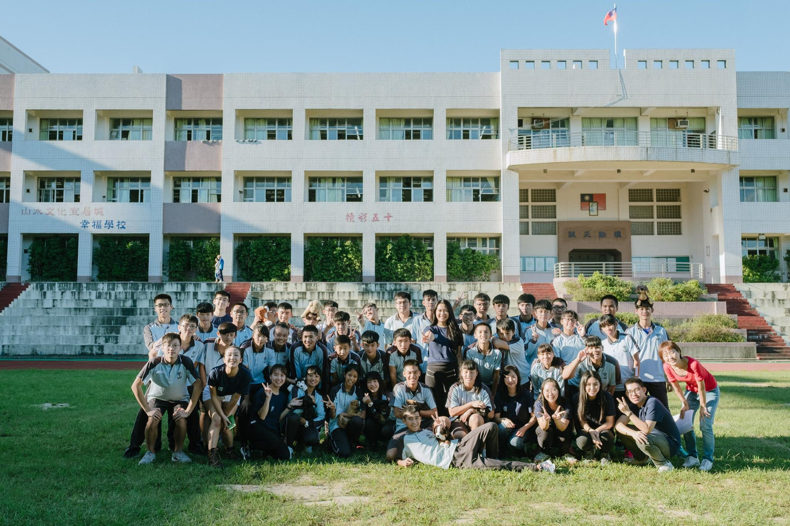

什麼是體驗式生命教育？
有別於校園課堂中的紙本教育，我們著重在讓學生能親身體驗生命的價值，同時也成為攝影志工，讓牠的模樣能被更真實呈現，讓牠的故事能被更多人看見，來修這門特別的課程，用擁抱與愛陪伴牠，牠就會告訴你生命的意義！
課程內容如下
- 認識動物之家的環境、工作人員的辛勞與流浪動物的議題
- 讓台灣的下一代能了解「毛孩是生命」領養不棄養的重要性
- 學會如何與狗狗互動，我們會讓學生牽浪浪到戶外，體驗如何與狗狗散步、喝水、撫摸及互動…等
- 「浪浪知多少」的學習式測驗，讓學生能在測驗中了解流浪動物的重要知識
- 練習寵物攝影技巧，用照片的交流去除語言的隔閡，更用心感受浪浪的生命價值

《TATA 前進收容所系列》
台灣收容所多處於偏遠地區，目前是和新店動物之家長期合作。收容所系列是我們起步的課程系列，主要讓學員認識動物之家的環境、工作人員的辛勞與流浪動物的議題，親眼看到、親身體驗台灣流浪動物議題的重要性及激發同學愛護動物的心，進而傳達領養不棄養的觀念。我們將在過程中教導學生拍攝技巧，讓他們為浪浪拍照並上傳粉專，增加浪浪的曝光率，希望同學了解自己是有能力去幫助台灣流浪動物的。

《TATA 前進校園系列》
現在除了課本上的知識外，學校也開始著重於生命教育的課程，我們經由雜學校的展覽讓更多老師及民眾了解TATA，進而邀請我們到學校上課。我們藉由收容所課程的基礎，想讓更多學生參與體驗式生命教育課程，因此選擇和新店動物之家合作，讓我們在每次課程中都將浪浪帶到學校裡。在校園課程中，除了基本課式教學外，我們還加上實際與浪浪互動的體驗課程及心靈成長團體，希望可以藉此改變學生對於流浪動物的刻板印象；心靈成長團體則能夠帶領學生們思考台灣流浪動物的議題以及自己可以怎麼做等等......。

《TATA 前進社會團體系列》
教育的根本從學校開始為基礎，我們也希望除了學生以外的社會民眾也可以參與我們的體驗式生命教育課程。許多社會團體看到我們的粉專後，會想要邀請我們去為他們的團體上課，我們將校園系列課程作為大綱為每個不同性質的團體個別訂製教案。